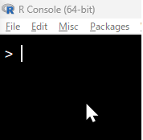
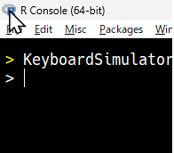
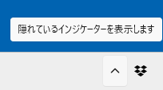
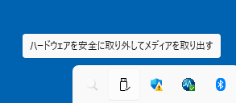
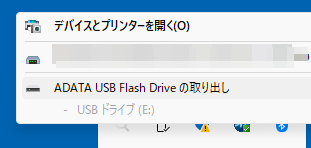
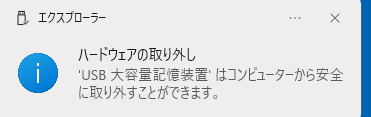
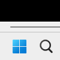

Chap. 12 KeyboardSimulatorでマウス・キーボードの自動化
KeyboardSimulatorを使うと，Rから直接操作しづらいくても，マウスやキーボードを用いて決まった操作をするものは自動化可能である． ただし，このパッケージはWindows専用である．
12.1 準備
キーボードとマウスの自動操作のパッケージKeyboardSimulatorをインストールする．
install.packages("KeyboardSimulator")library(tidyverse)
library(KeyboardSimulator)
library(automater)KeyboardSimulatorでは，マウスやキーボードの操作とマウス位置の取得は可能であるものの，アイコンの画像をもとに画面上での位置の取得ができない． 画像からの位置取得のために，PythonとそのライブラリPillowとPyAutoGUIを使用する． これらのインストールがまだの場合は，[Pythonとそのライブラリのインストール](#install_python}を参考にして，Python，Pillow，PyAutoGUIをインストールする．
また，RからPythonを使うためにreticulateを呼び出しておく．
library(reticulate)さらに，使用するPythonの指定を参考にreticulateで使用するPythonを指定する．
automaterパッケージのfind_python()を使用すると，楽に指定ができる．
インストール済のPythonを探して1つだけのときはそのパスを出力する．
複数ある場合は選択肢からユーザが選んだパスが出力されるので，そこから選ぶ．
automater::find_python() %>%
reticulate::use_python()なお，find_pythonの中身は以下のとおりである．
find_python## function (select_memu = TRUE)
## {
## os <- get_os()
## python_path <- ifelse(os == "win", "where python", "which python") %>%
## system(intern = TRUE) %>% fs::path()
## if (length(python_path) > 1) {
## if (select_memu) {
## choice <- utils::menu(python_path, title = "Select Python path. 0: exit and return all.")
## if (choice == 0) {
## return(python_path)
## }
## }
## else {
## return(python_path)
## }
## }
## else {
## choice <- 1
## }
## return(python_path[choice])
## }
## <bytecode: 0x0000022e31707488>
## <environment: namespace:automater>もちろん，以下のように自分でPythonのパスを指定しても良い．
reticulate::use_python("your_python_path")12.2 マウスの移動
マウスの移動は次のようにする．
コードを実行すると移動の様子を実際にみることができる．
マウスの位置がにもよるが，徐々にマウスが左上(10,10の場所)に向かって移動するのが見て取れる．
durationでは移動にかかる時間を秒単位で指定するので，この数値が大きいほどゆっくりした動きになる．
step_ratioでは移動段階をどのように分けるかを指定し，この数値が小さいほど細かな動きになる．
KeyboardSimulator::mouse.move(10, 10, duration = 1, step_ratio = 0.1)
KeyboardSimulator::mouse.move(100, 100, duration = 0.5)

12.3 マウスの位置取得
マウス操作で重要なのは画面上での位置を取得することである．
KeyboardSimulatorには，マウス位置を取得する関数mouse.get_cursor()がある．
1箇所だけならこの関数で十分だが，何度かマウスをクリックする作業の場合は何度も実行する必要があってちょっとめんどくさい．
KeyboardSimulator::mouse.get_cursor()
## [1] -3297 1306USBの取り外しの関数を作成するときには，タスクバーとRウインドウとの行き来が必要だが，作業中にタスクバーの操作がもとの状態に戻ってしまうことがある．
そうなると，正しいマウス位置の取得が難しくなる．
そこで，一定時間の間隔でマウス位置を取得するautomaterの関数mouse_record()を利用する．
関数の内容は以下のとおりである．
automater::mouse_record## function (n = 5, interval = 1)
## {
## x <- list()
## y <- list()
## for (i in seq(n)) {
## if (interval < 0) {
## user_input("Press any keys on R console")
## }
## else {
## automater::sleep(interval)
## }
## x[[i]] <- KeyboardSimulator::mouse.get_cursor()[1]
## y[[i]] <- KeyboardSimulator::mouse.get_cursor()[2]
## position <- paste0(i, ": x = ", x[[i]], ", y = ", y[[i]],
## "\n")
## cat(position)
## }
## return(list(x = unlist(x), y = unlist(y)))
## }
## <bytecode: 0x0000022e29b9dd88>
## <environment: namespace:automater>sleep()を挟んで，n回分の位置を取得するだけの関数である．
実行すると以下のような結果が得られる．
位置を表示させているのが煩わしければ，関数のforループ中のcat(position)を削除すれば良い．
position <- automater::mouse_record()
position
## 1: x = 680, y = 587
## 2: x = 162, y = 482
## 3: x = 94, y = 1250
## 4: x = 816, y = 1352
## 5: x = 773, y = 511
## $x
## [1] 680 162 94 816 773
##
## $y
## [1] 587 482 1250 1352 51112.4 USBメモリの安全な取り出しの自動化
ここでは「USBの安全な取り出し」を自動化する． タスクバーにあるUSBのアイコンを何度かクリックして，USBを安全に取り出せるようにするものである． この作業をしなくても，USBディスクが壊れることはほとんど無いだろうが，作業するに越したことは無い． 単純な操作だが，何度もやっていると面倒くさいし，しかも老眼の人間には避けたい作業である．
マウスをどこでクリックしているのか，あらかじめ位置を取得しておく必要がある．
mouse_record()を使えば，マウス位置を簡単に取得できる．
position <- automater::mouse_record(n = 4, interval = -1)
position
## $x
## [1] 770 730 700 1040
## $y
## [1] 1900 1800 1760 1750今回の場合は，以下の画像ののようなマウスの位置を予め取得しておく．




USBメモリの安全な取り出しをする前の位置にマウスを戻したい場合は，あらかじめ位置を取得しておき(ここはposに保存)，最後にその位置に戻す．
あとは，上で取得した位置にマウスを移動させ，順次クリックさせるだけだ．
実際にUSBメモリをパソコンに取り付けて，動作を確認する必要がある．
マウスの移動速度が早すぎて，パソコンの描画・動作速度よりも先にクリックをしてしまう場合があるかもしれない．
その場合は，sleep_sec = 1(デフォルトは0.5秒)のようにマウスの移動後に時間を挟む必要がある．
pos <- KeyboardSimulator::mouse.get_cursor()
automater::mouse_move_click( 770,1900)
automater::mouse_move_click( 730,1800)
automater::mouse_move_click( 700,1760)
automater::mouse_move_click(1040,1750)
automater::mouse_move_click(pos[1], pos[2])また，アプリ・ディレクトリの瞬間起動を参考に，以下のようにすれば，上記のコードを瞬間起動ができる．
- Rのコードをテキストファイル
remove_usb.rscとして保存
remove_usb.rscをクリックして，USBメモリの安全な取り出しが実行できるか確認しておく
- パスの通ったディレクトリに，
remove_usb.rscのショートカットをruとして保存
- [Win] + [R]の「ファイル名を指定して実行」に
ruと入力すると，remove_usb.rscが実行される(USBメモリの安全な取り出しが起動)
一旦ショートカットを登録してしまえば，あとは[Win] + [R]の「ファイル名を指定して実行」から起動できる．
頻繁に行うが他に代替するのが難しいマウス操作があれば，同様に自動化しておくと便利である． 筆者は，USBメモリの取り出しの他に，wifiへの接続やタスクバーに固定されているアプリの操作などを自動化している．
12.5 画像をもとにマウスを動かしてクリックする
アイコンの位置が固定されている，つまりマウスのクリック位置が一定であれば，automater::mouse_move_click(1040,1750)のような定位置で良い．
しかし，ウィンドウの位置が異なったり，タスクバー上での位置が変化したりして，クリックするべき位置が一定でないことがある．
クリックする対象を画像ファイルとして用意できれば，その画像をもとにクリックの位置を決定できる． Rのパッケージではこれを実現できなさそうなので，PythonのPyAutoGUIを利用する．
# reticulate::use_python("your_python_path")
# reticulate::use_python(automater::find_python())
pag <- reticulate::import("pyautogui") # 呼び出し時は小文字でPythonに慣れていない筆者は，このコードを実行する前にライブラリの指定で大文字を使ったため何度か失敗してしまった． Pythonでライブラリが大文字を含んでいても，呼び出すときは小文字で指定しないといけないようだ．
以下ではディスプレイの左下部部のスクリーンショットをとって，一時フォルダにpng保存する． スクリーンショットの範囲は，ディスプレイの左下の100*100ピクセルである． この範囲をpngとして保存する．
region <- automater::display_corner(corner = "bottom_left", width = 100, height = 100)
screenshot <- pag$screenshot(region = region)
# ls("package:fs")
png <- fs::path_temp("screenshot.png")
screenshot$save(png)
png## C:/Users/matu/AppData/Local/Temp/Rtmp2xEXGC/screenshot.pngコードを実行すると，一時ディレクトリにpng形式の画像が保存される． 筆者の環境では次の画像が保存されていた．

以下のようにpag$locateOnScreen()を使うと，画像のパスを指定することでその画像の位置を取得できる．
位置は，画像の4つの頂点の位置なので，その中心をautomater::center()で求めて，その位置へマウスを移動する．
以下ではマウスの移動はpag$moveTo()で実行しているが，もちろんKeyboardSimulator::mouse.move()でも構わない．
コードを実行して画像が正しく認識されると，画像の中心位置(画面の左下から左から50，上から50の位置)に一旦移動した後で，左上(左から10，上から10の位置)に移動するはずである．
position <- pag$locateOnScreen(png)
position <- automater::center(position)
pag$moveTo(position$x, position$y)
# durationの指定が可能
pag$moveTo(10,10, duration = 5)マウスが動かない場合は，画像認識がうまくいっていない可能性が高い．
PyAutoGUIの画像認識は，ディープラーニングのような似たものを抽出するのではなく，ピクセル単位で合致するもの，つまり全く同じ画像を探し出すものである．
そのため，取得したスクリーンショットの状態から変化があると認識できない．
これを改善するためには，pag$locateOnScreen()でconfidence = 0.6のように画像認識の精度を設定する．
完全に一致しなくても結果を返してくれるが，下げすぎると誤認識の可能性が出てくる．
また，confidenceを使うには，PythonのライブラリであるOpenCV-Pythonをインストールしなければならないので，以下のコードを実行しておく．
shell("pip install opencv-python")
position <- pag$locateOnScreen(png, confidence = 0.6)さらに，grayscale = TRUEを指定すると白黒画像として認識するため若干であるが高速化する．
position <- pag$locateOnScreen(png, confidence = 0.6, grayscale = TRUE)画像から位置を取得するとき，画面全体を検索すると時間がかかる．
設定によるが，USBメモリの取り出しやwifiへの接続なら画面の右下，スタートメニューなら画面の中央か左下のように，ある程度の位置が決まっている．
そのため，特定の領域のみ検索すれば動作が早くなる．
そこで，検索する領域を画面サイズから位置を指定する．
パソコンの設定を見て手入力しても良いが，できれば自動的に取得したい．
画面サイズを取得するには，display_size()を使いう．
画面の4隅の位置を指定するには，display_size()を含んでいるdisplay_corner()を使う．
関数の実行例と中身は以下を見てほしい．
automater::display_size()
automater::display_size
automater::display_corner()
automater::display_cornerこれまでの内容をもとにした画像から位置をクリックする関数として，automaterにはrecog_image_click()がある．
以下の引数が利用可能である．
- wait：TRUEでは，画像が見つかるまで画像認識を1秒間隔で繰り返す．パソコン描画がマウスの自動化に追いつかないときには便利．
- button：クリックの左右を指定．c(“left”, “right”)
- hold：クリックの保持を指定．TRUE, FALSE
- …：オプションの引数で
pag$locateOnScreen()に渡される- region：画像の検索範囲を指定．
display_corner()で指定可能
- grayscale：TRUEで白黒認識
- confidence：認識精度を数値で指定(0-1)
- region：画像の検索範囲を指定．
使い方と関数の内容は以下を見てほしい．
region <- automater::display_corner()
img <- "your_image_path"
automater::recog_image_click(img, pag, region = region)
automater::recog_image_click12.6 まとめ
固定位置への操作は，クリックするべき位置をあらかじめ取得すれば簡単に自動化できる．
クリックする位置が一定でない場合は，画像をもとにしてマウスを動かすことができる．
そうすれば，まるで人間が作業しているようなこともできる．
ただし，画像が完全に一致しないときには認識できないことがあるので，grayscaleやconfidenceでうまく調整しなければならない．
また，描画が追いつかないときへの対応も必要である．
12.7 (コラム)画面サイズ取得の試行錯誤
本文では，画面サイズの取得方法する関数display_size()をさらっと紹介したが，関数完成には試行錯誤があった．
スマートな解決方法をすぐに思い付けば良いのだが，なかなかそうは行かない．
まず試したのは，rJavaを使う方法である． rJavaで画面サイズの取得は可能であるが，あまりおすすめしない． 「おすすめしない」というのは理由がある． rJavaパッケージはその名のとおりRからJavaを利用するものだが，うまく動作しないことがあるからだ． 通常のパッケージならインストールして呼び出せば，そのまますぐに使えるはずだが，rJavaはうまくいかないことがある． OSにインストールされているJavaのバージョンとRとの関係や，パスの設定の関係でエラーが出て動かないことがある．
うまくいくか分からないが，次のコードが動けば使って画面サイズを取得できる．
# C:\Users\matu>java -version
# java version "1.8.0_361"
# Java(TM) SE Runtime Environment (build 1.8.0_361-b09)
# Java HotSpot(TM) 64-Bit Server VM (build 25.361-b09, mixed mode)
# C:\Users\matu>path
# PATH=C:\Program Files (x86)\Common Files\Oracle\Java\javapath;C:\Program Files (x86)\Java\jre1.8.0_361\bin\client
# ユーザの環境変数
# C:\Program Files (x86)\Java\jre1.8.0_361\bin\client
install.packages("rJava")
library(rJava)
.jinit()
toolkit <- J("java.awt.Toolkit")
default_toolkit <- .jrcall(toolkit, "getDefaultToolkit")
dim <- .jrcall(default_toolkit, "getScreenSize")
width <- .jcall(dim, "D", "getWidth")
height <- .jcall(dim, "D", "getHeight")いくつかの環境で試したが，どうも設定がよくわからない場合があった．
rJavaがあまり良くなさそうなので，別の方法を考えた．
Windowsであれば，次のコードのようにsystem()を使ってコマンドを入力して情報を得ることができる．
ただし，この場合は注意が必要で，ここで取得したのは画面の解像度であって，KeyboardSimulatorで指定するマウスの位置ではないことがある．
高解像度の画面の場合は，画面を125%に拡大していることがあるためだ.
その場合は，ここで得た値を1.25で割る必要がある．
# https://stackoverflow.com/questions/7305244/how-can-i-get-the-screen-resolution-in-r
library(tidyverse)
# cmd <- "wmic path Win32_VideoController get CurrentHorizontalResolution,CurrentVerticalResolution /format:value"
item <- c("CurrentHorizontalResolution", "CurrentVerticalResolution")
cmd <- paste0("wmic path Win32_VideoController get ", item, " /format:value")
resol <-
cmd %>%
purrr::map(system, intern = TRUE) %>%
purrr::map(paste0, collapse = "") %>%
purrr::map_chr(stringr::str_replace_all, "[A-z\\r=]+", "") %>%
as.double()rJavaもダメで，system()を使っても注意が必要であり，自動化もいろいろと大変である．
自動化すれば手を抜けるが，手を抜くための努力は必要だ．
著者も色々と試行錯誤したが，結局たどり着いたのは簡単な方法であった．
次のようにmouse.move()でマウスをありえないぐらい右下に移動して，その位置を取得する方法だ．
幸いなことに，mouse.move()はありえない位置を指定してもエラーにはならず，最大限可能なところまで移動してくれる．
最大限に移動した位置を取得すれば完了だ．
画面の最大値とマウスの位置が1つずれているのは，画面の左上が[1,1]ではなく[0,0]のためだ．
KeyboardSimulator::mouse.move(999999,999999)
KeyboardSimulator::mouse.get_cursor()以上のように，関数を1つ作るにも試行錯誤をともなうことがある． もちろん，考えた関数がそのままうまく動けばよいが，そうでないときも多い． 出来上がった関数だけを見れば非常にスマートな解決方法を実装していても，その背景には多くの試行錯誤や失敗(成功の糧)があるのであった．